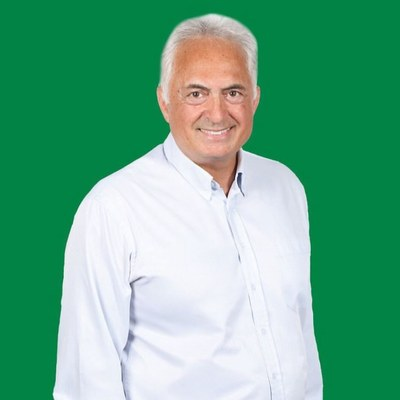

Sidewalk Strategy is the communications firm for leaders who shape the world.
Our Rules for Communicating
The paradigm has shifted. You are now the message. In a digitized, optimized and impersonal media environment, now more than ever, people want to connect with human stories.
Plant your feet
Know what you stand for and stand there. If you try to stand for everything, you will stand for nothing.
Attention is earned
People give their attention to those who give them something in return.
Establish your value proposition
Finish this sentence: people follow me because ____. If you cannot fill in the blank, everything that follows will be unclear.
Work in service of others
Give people something worth believing in: a solution, a reason to feel proud, a place to belong.
Speak with people, not at them
Share what you believe, the way you would with a friend. Lecturing does not build trust.
Say what you mean. Mean what you say
Authenticity is everything.
Speak in plain, understandable terms
Modern audiences do not have time or patience for anything else. This means:
- No jargon: Jargon hides what you mean. Say it plainly.
- No euphemisms: Do not leave your message open to misinterpretation.
Say one thing at a time
There is too much noise in the media environment for anything but clarity.
Lead with narrative
Stories connect people. Facts invite a debate, and debates dampen message clarity. Stories produce emotion, and it is much harder to debate a feeling.
Open with value
Tell people what they gain before you tell them how your plan, product or service works. Specs and process mean nothing until the benefit is clear. Add details only if they help people see what they gain.
Always offer a better way
Do not lead with what you are against. Present a clear vision and give people a reason to believe in it.
Go first
Move with conviction, clarity and speed. Set the tone. Do not wait to be asked, and do not wait for someone else to set the story.
Repeat yourself
People trust what they hear often. Repeat your message clearly and consistently.
Messaging problems are volume problems
A clear message cannot get through if it is not heard often enough, across different mediums and platforms.
Be where your people are
Show up in every place and platform where your audience is. Own your distribution and make yourself present.
Everything counts
Every post, clip, speech and quote either builds your message or weakens it.
Have a destination
Know where you want your audience to land, then take them there one step, post and message at a time.
Who we work with
Political
- Elected officials
- Mayors and councillors
- Political candidates
- Retired public servants
Business
- Founders
- CEOs and presidents
- Business owners
Community
- Non-profit leaders
- Community organizers
- Community advocates
What we do
Digital
- Social media content
- Social media management
- Digital presence management
- Website and email management
- Newsletters
- Op-eds and articles
- Video scriptwriting
- Video editing
- Podcast creation
- Graphic design
Strategy
- Message strategy
- Narrative development
- Positioning
- Personal brand building
- Audience research
- Media strategy
- Campaign communications
- Crisis communications
- Talking points
Presence
- Media relations
- Press releases
- Media training
- Speechwriting
- Public speaking coaching
- Event communications
We do everything, and then some more.
Political
Candidates, elected officials and campaign managers who need a message voters repeat and a field operation that reaches them.
Campaign strategy
The plan, the message and the calendar, built around what will move your voters.
Speeches and earned media
Remarks, debate preparation and press that carry one clear position.
Field programs
Door-to-door and phone programs that reach voters where they are.
Research and message testing
Polling and message testing before you spend on a message.
Community
Organizers, association leaders and advocates making the case for change in their neighbourhood and beyond.
Issue campaigns
Coalitions, messages and asks that people can understand and repeat.
Town halls and public meetings
Events and materials that put residents' voices on the record.
Spokesperson preparation
Media training for the people who will speak for the cause.
Storytelling
Local stories and op-eds that show what is at stake.
Founders
Founders and executives who need people to understand what they make and why it matters.
Positioning and narrative
A plain account of what you build and why it matters, tested with real audiences.
Launch communications
Announcements, press and a first public presence for what you are building.
Founder profile
Op-eds, interviews and speaking that build your name in your field.
Issues and crisis
A prepared response before a story breaks, and a steady hand when one does.
Clients
Leaders who trust us with their voice.
Alex Casbarro
York Catholic District School Board Trustee for Vaughan - Ward 2
Sonia Fiorini
Councillor for Newmarket - Ward 1
Bruce Kelly
Mayor of Carling, Ontario
Pamela McCarthy
Former YRDSB Vice Chair, Candidate for Councillor - Newmarket Ward 2
Mary Petrolo
York Catholic District School Board Trustee for Vaughan - Ward 1 (Maple and Kleinburg)

Mario G. Racco
Local and Regional Councillor, Vaughan
Contact
Tell us what you are building.
julian@sidewalkstrategy.co